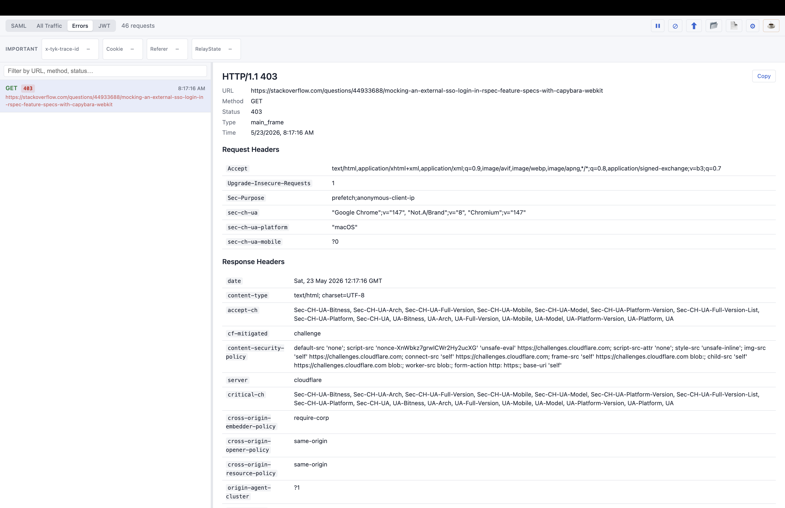

Installing
The quickest way to install is from the Chrome Web Store:
- Open the Awesome SAML Tracer listing in the Chrome Web Store.
- Click Add to Chrome, then confirm.
- Open the puzzle-piece menu in the toolbar and pin the extension so it's always one click away.
Manual install (developer mode)
Prefer to run it from source? You can load the unpacked extension:
- Download or clone the GitHub repository.
- Open
chrome://extensionsand enable Developer mode with the toggle in the top-right. - Click Load unpacked and select the
awesome-saml-tracer/folder. - Pin the extension from the puzzle-piece menu.
Requirements: Chrome 111 or newer. Awesome SAML Tracer is a Manifest V3 extension.
Opening the extension
Click the extension icon in your toolbar to open the main window. You can also reach it from inside Chrome DevTools — open DevTools on any page and click the SAML tab.
The interface
The window is split into two panes:
- Left pane — the capture list. It shows SAML messages or network requests depending on the active view.
- Right pane — the detail view. It shows the fully decoded content of whichever entry you select.
Drag the divider between the panes to resize them. A search bar at the top of the left pane filters the list by URL, HTTP method or status code in real time.

The four views
Use the toggle buttons at the top-left to switch between views:
| View | What it shows |
|---|---|
| SAML | Only requests that contain a SAMLRequest or SAMLResponse. This is the default view. |
| All Traffic | Every HTTP request captured on the page. SAML-bearing requests get a blue left border. |
| Errors | Network requests that returned a 4xx or 5xx status. The button is disabled until an error is captured. |
| JWT | A standalone JWT decoder — paste any token to inspect it. |
SAML view

Whenever a page performs a SAML SSO exchange, the request appears in the list automatically — no reload needed. Each entry shows the HTTP method (in color), the message type (SAMLRequest or SAMLResponse), a timestamp and the endpoint URL.
Click any entry to decode it. The detail pane shows:
- Kind — e.g.
ResponseorAuthnRequest - URL, Issuer, Destination, Subject, Status, Encoding, Timestamp
- Conditions — NotBefore, NotOnOrAfter and Audience, when present
- Attributes table — friendly name, full URN and value(s)
- Parameters — RelayState and the raw encoded SAML payload, with the binding type
- Request & response headers
- Raw XML — collapsed by default; click to expand
All Traffic view
Shows every HTTP request the browser made, not just SAML ones. Requests containing SAML are highlighted with a blue left border. Selecting a SAML-tagged entry shows the full SAML detail; selecting a plain entry shows method, status, URL and headers.
Errors view

Filters the network list down to requests that returned a 4xx or 5xx status. The button stays grayed out until an error response is captured, then activates automatically.
JWT view
Click JWT to open the decoder. Paste a token into the text area or use Paste from clipboard. The extension splits it into Header, Payload and Signature, and a Highlights panel surfaces the key claims in plain language — issuer, subject, audience, expiry, and whether the token is already expired.
Toolbar buttons
| Button | Action |
|---|---|
| ⏸ / ▶ Pause / Resume | Stop or restart capturing new traffic. |
| ⊘ Clear | Remove all captured data from the current session. |
| ⬆ Export | Save all captures as a .json file (SAML-tracer compatible). |
| 📂 Import | Load a previously exported .json file. |
| 📄 Report | Generate a self-contained HTML report in your Downloads folder. |
| ⚙ Settings | Open the settings panel. |
Sharing captures
HTML report
Click the Report button to generate a self-contained .html file in your Downloads folder. It needs no internet connection and opens in any browser. The report includes every SAML capture with decoded attributes, conditions, parameters and raw XML, plus a full network traffic table. A green banner appears after saving with a Show in Folder button. To turn it into a PDF, open the report and use File → Print → Save as PDF.
Copy a single entry
Select an entry, then click the Copy button at the top-right of the detail pane. This copies that entry's decoded content as formatted plain text — ideal for pasting into chat, email or a bug report.
Export & import
Export saves all captures as structured JSON in the SAML-tracer format, so it can be re-opened in either extension. To import, use the 📂 button or simply drag-and-drop a .json file anywhere onto the window. Importing switches the session to read-only mode; click ⊘ Clear to return to live capture.
Settings
Open settings with the ⚙ button. Settings save automatically and persist across browser sessions.

Highlight domains
Enter URL patterns (one per line, wildcards supported). Any request whose URL matches gets a gold star (★) and a colored border — handy for spotting your IdP or SP traffic at a glance.
*mycompany.com
*okta.comImportant headers / parameters
Enter header names or SAML parameter names to pin in the info bar — a strip below the toolbar that appears when you select an entry. Pinned values show as chips you can copy with one click; if a value is absent, the chip shows a dash.
X-Transaction-Id
RelayState
SAMLResponseShow query params for
Enter URL patterns. When a selected request matches, all of its query string parameters are shown in the info bar automatically.
*myapp*
*mycompany.com/api*Extract from URL path
Enter rules in Label | *pattern* format. When a selected URL matches, the extension extracts the last path segment and shows it in the info bar with your label. For example, with the rule Tenant | *tenants/*/config*, a URL of https://myapp.com/tenants/acme-corp/config displays Tenant: acme-corp.
Config ID | *myapp*
Tenant | *tenants/*/config*DevTools panel
Open Chrome DevTools on any page (F12 or Cmd+Option+I) and click the SAML tab. The panel works just like the popup but is automatically filtered to traffic from the tab you're inspecting — useful when several tabs are open at once.
Tips & troubleshooting
- SAML traffic not showing? Make sure the extension is loaded and the tab performing the SSO flow is active when you trigger the login. The extension captures in real time — it can't see requests that happened before it was installed.
- Redirect vs POST binding — Both are supported. Redirect-binding GET requests are deflate-decompressed automatically; POST-binding form data is decoded from base64.
- Reviewing someone else's export — Drag-and-drop their
.jsonfile onto the window, or use the 📂 Import button. No active SSO flow needed. - Printing a report — Open the HTML report in Chrome and use File → Print → "Save as PDF" for a shareable file with every section expanded.
Still stuck? Head to the Support page for the FAQ, or open an issue on GitHub.